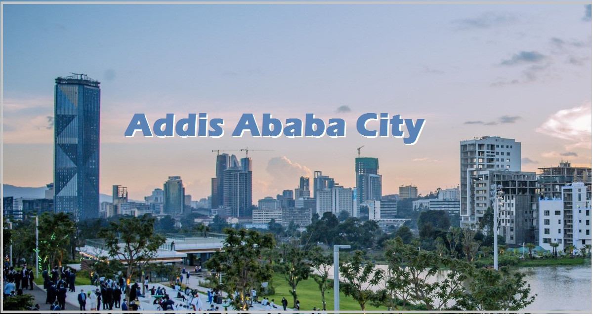
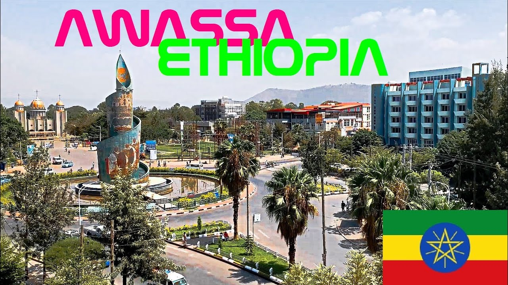
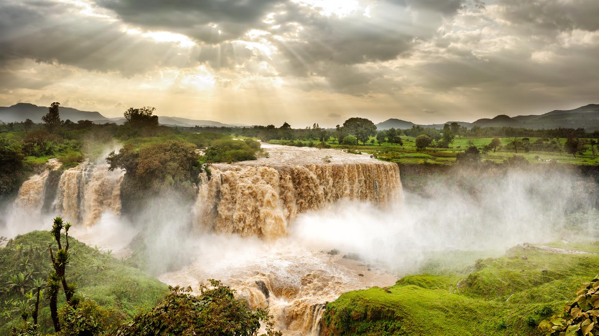

Ethiopia, the cradle of humankind, stands as one of the oldest nations in the world. As the only African country that was never fully colonized, it proudly carries a legacy of resistance, rich culture, and ancient traditions. From the rock-hewn churches of Lalibela to the stunning landscapes of the Simien Mountains, Great Ethiopia offers a timeless journey through history, faith, and natural beauty.
Ethiopia is also renowned for its unique calendar and time system. Unlike most of the world, Ethiopia follows the Coptic calendar, which has 13 months in a year—12 months of 30 days each and a 13th month called Pagumē, which has 5 or 6 days. This puts the country roughly seven to eight years behind the Western Gregorian calendar. When the world is celebrating the start of a new year, Ethiopians are still enjoying the final days of their own ancient cycle. Beyond its calendar, Ethiopia is famous as the birthplace of coffee. According to legend, a goat herder named Kaldi discovered the energizing effects of coffee beans in the Ethiopian region of Kaffa. Today, the Ethiopian coffee ceremony is a sacred social ritual, involving roasting, grinding, and brewing fresh beans in front of guests. It is a symbol of friendship, respect, and community that can last for hours.
National anthem:
Main Cities
ADDIS ABABA

Addis Ababa, which means "New Flower" in Amharic, is the vibrant capital city of Ethiopia and serves as the political, cultural, and economic heart of the nation. Founded in 1886 by Emperor Menelik II and Empress Taytu Betul, the city sits at an elevation of over 2,300 meters (7,500 feet), making it one of the highest capitals in the world. Addis Ababa is home to important landmarks such as the Ethiopian National Museum, where the famous hominid fossil "Lucy" is displayed, the grand Holy Trinity Cathedral, and the African Union headquarters, which symbolizes the city's role as the diplomatic capital of Africa.
HAWASSA

Hawassa is a beautiful and rapidly growing city located in the Great Rift Valley of Ethiopia, serving as the capital of the Sidama Regional State. Situated along the shores of Lake Hawassa, the city is known for its stunning natural scenery, calm atmosphere, and rich biodiversity. Unlike many other Ethiopian cities, Hawassa is relatively modern and well-planned, with wide streets, lush greenery, and a peaceful lakeside setting that makes it a popular destination for both tourists and locals seeking relaxation. The lake itself is home to hippos, otters, and a wide variety of bird species, including pelicans, fish eagles, and kingfishers, making it a paradise for nature lovers.
BAHIRDAR

Bahir Dar is one of Ethiopia's most beautiful and well-planned cities, located on the southern shore of Lake Tana, the largest lake in Ethiopia and the source of the Blue Nile. The city is famous for its wide, palm-lined avenues, lush greenery, and colorful flower gardens, which have earned it a reputation as one of the cleanest and most peaceful cities in the country. Bahir Dar serves as the gateway to the stunning Blue Nile Falls, known locally as "Tis Abay" meaning "Smoking Water," where the mighty Blue Nile plunges over 40 meters in a dramatic cascade of mist and thunder.
Census History
Name
2007
2016
Region
1
Addis Ababa
2,739,551
3,352,000
Addis Ababa
2
Hawassa
157,139
318,618
Sidama
3
Bahir Dar
155,428
297,794
Amhara
ETHIOPIA THROUGH LENS
Click on the pictures to learn more
Rock-Hewn Churches Lalibela
Lalibela is a town in the Amhara Region of Ethiopia. Located in the Lasta district and North Wollo Zone.
Simien Mountains National Park
Simien Mountains National Park is the largest national park in Ethiopia. Located in the North Gondar Zone of the Amhara Region.
Awash National Park
Awash National Park is a national park in Ethiopia. Located at the border of Oromia state and Afar state.
Erta Ale
Erta Ale is a continuously active shield volcano in the Afar Region of northeastern Ethiopia.